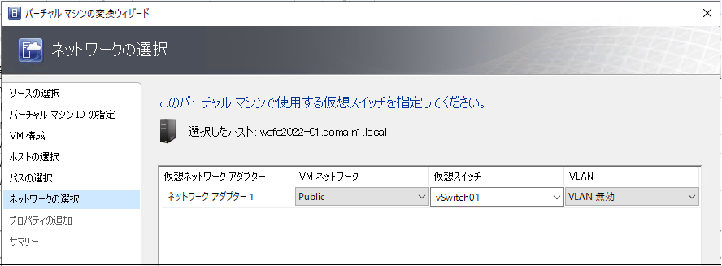

皆様こんにちは、System Center サポートチームの 石原 です。
今回は、SCVMM を用いて VMWare VM を Hyper-V VM に変換する手順について説明します。
仮想マシンへの変換について
Microsoft が提供する仮想マシンの変換・移行ツールには、以下のようなものがあります：
１．SCVMM（System Center Virtual Machine Manager）
VMware ESXi ホスト上で稼働している VMware 仮想マシンを、Hyper-V 仮想マシンへ変換するためのツールです。
２．Azure Migrate 参考
オンプレミス環境にある物理・仮想マシンを、Azure 上に移行する際に使用するツールです。評価、準備、移行までを一貫してサポートします。
３．Disk2vhd 参考
稼働中の Windows マシンのボリューム（ディスク）を、Hyper-V 環境で使用可能な VHD または VHDX ファイルとして保存するツールです。シンプルな物理→仮想（P2V）変換に利用されます。
本記事では、１の SCVMM を用いた変換について説明します。
変換処理は、以下の3つのステップで実施します：
ステップ１．変換先の VM を配置する Hyper-V ホストを SCVMM に管理対象として登録します。
ステップ２．変換元の VMWare VM に SCVMM がアクセス可能にします。
ステップ３．SCVMM から変換処理を実行します。
ステップ１．変換 VM を配置する Hyper-V ホストを SCVMM に管理対象として登録
[ファブリック] 画面から Hyper-V ホストやクラスターをリソースとして追加することで、SCVMM の管理対象に登録できます。
■ リソースの追加画面
本記事では、リソース追加の具体的な手順については割愛しております。詳細な手順については、以下の公開ドキュメントをご参照ください。
※ 公開ドキュメント：VMM コンピューティング ファブリックで Hyper-V ホストまたはクラスターとして Windows サーバーを追加する
リソース追加の過程で、対象の Hyper-V ホストには自動的に SCVMM エージェントがインストールされ、SCVMM による管理が可能な状態になります。
ステップ２．変換元の VMWare VM に SCVMM がアクセス可能にする
変換元の VMware VM に SCVMM がアクセスできるようにする方法としては、次の2通りがあります。
方法1：vCenter 経由で ESXi ホストを SCVMM に登録する方法
SCVMM に vCenter を追加し、そこから管理対象の VMware ESXi ホストを登録することで、VMware VM へのアクセスが可能になります。
方法2：VM ファイルを SCVMM ライブラリに手動でコピーする方法
変換対象の VMware 仮想マシンのファイル（.vmdk など）を、SCVMM のライブラリ サーバー上にあるライブラリ共有へコピーすることで、SCVMM からファイルベースで変換処理を行うことができます。
■ 方法1「vCenter 経由で ESXi ホストを SCVMM に登録する方法」の構成イメージは、以下の図の通りです。
まず、[ファブリック] 画面から SCVMM に vCenter サーバーをリソースとして追加します。
次に、vCenter 経由で ESXi ホストをリソースとして登録します。
vCenter サーバーと ESXi ホストの具体的な登録手順については、以下の公開ドキュメント内の [vCenter サーバーとソース ESXi ホストを SCVMM 管理下に置きます] 章をご参照ください。
※ 公開ドキュメント：vCenter サーバーとソース ESXi ホストを SCVMM 管理下に置きます
■ 方法2「VM ファイルを SCVMM ライブラリに手動でコピーする方法」の構成イメージは、以下の図の通りです。
SCVMM のライブラリ サーバーにある ライブラリ共有フォルダーへ、変換対象の VMware 仮想マシンのファイル一式をコピーします。
※1：VM の整合性を保つため、コピー前に変換対象の VMware 上の仮想マシンは OS をシャットダウンしてください。
※2：仮想ディスク ファイル（.vmdk）だけでなく、構成ファイル（.nvram、.vmx など）もすべてコピーする必要があります。
ファイルのコピーが完了すると、SCVMM のライブラリ画面上で、該当の VMware 仮想マシンが [バーチャル マシン] として認識されるようになります。
ステップ３．SCVMM から変換処理を実行
変換処理は、[VM とサービス] 画面から実行することができます。
詳細な手順については、以下の公開ドキュメント内の [VMware VM を Hyper-V に変換する] 章をご参照ください。
※ 公開ドキュメント：VMware VM を Hyper-V に変換する
以下に、バーチャル マシン変換ウィザードの手順を掲載しましたので、ご参考になれば幸いです。
■ [VM とサービス] 画面から、バーチャル マシン変換ウィザードを起動します。
■ [ソースの選択] 画面にて、変換対象の VMWare VM を選択して [次へ] をクリックします。
■ [バーチャル マシン ID の指定] 画面にて、SCVMM や Hyper-V マネージャー上で表示される変換後の仮想マシン名を入力し、[次へ] をクリックします。
■ [VM 構成] 画面にて、プロセッサ数、メモリ、世代を設定し、[次へ] をクリックします。
■ [ホストの選択] 画面にて、配置先の Hyper-V ホストを選択し、[次へ] をクリックします。
※「選択された VM ネットワークに使用できる接続が見つかりません。」というエラーが表示される場合は、後述の「注意①」の内容をご確認ください。
■ [パスの選択] 画面にて、Hyper-V VM の VM ファイル (仮想ディスク ファイルや構成ファイルなど) を配置するストレージのパスを選択し、[次へ] をクリックします。
■ [ネットワークの選択] 画面にて、変換後の VM のネットワーク アダプターが接続するネットワークを選択し、[次へ] をクリックします。
※ ネットワーク アダプターは、新規のデバイスとして Hyper-V 仮想マシンに作成されます。本件に関する補足説明は、後述の 注意③ に記載しておりますので、あわせてご確認ください。

■ [プロパティの追加] 画面にて、起動時と停止時の操作を選択し、[次へ] をクリックします。
■ [サマリー] 画面にて、設定内容を確認し、[作成] をクリックすると変換処理が開始されます。
変換処理が完了すると、SCVMM コンソールや Hyper-V マネージャーで管理可能になります。
=====================================================================
注意①：ホストの選択時に「選択された VM ネットワークに使用できる接続が見つかりません。」というエラーが表示された場合
=====================================================================
変換対象の VMware 仮想マシンが接続している VM ネットワークに対して、配置先の Hyper-V ホストが対応するネットワーク アダプターを保持していない場合、そのホストに仮想マシンを配置すると ネットワークの不整合が発生する可能性があります。
このエラーは、そうした状況を事前に検出して変換を抑止するための警告です。
■ 回避方法
変換元の仮想マシンについて、[プロパティ] > [ハードウェア構成] > [ネットワーク アダプター] を開き、接続されている VM ネットワーク を確認します。
次に、配置先となる Hyper-V ホストに対して、[プロパティ] > [ハードウェア構成] > [ネットワーク アダプター] を開き、[論理ネットワーク] に、先ほど確認した VM ネットワークへの接続を追加することで、エラーを回避できます。
以下の例では、変換元の VM が VMNetwork という VM ネットワークに接続しているため、配置先の Hyper-V ホストも VMNetwork への接続を追加しています。
■ 補足説明
SCVMM には、[設定] > [全般] > [ネットワーク設定] に [論理ネットワークの自動作成] という設定項目があります。
この設定は、既定で有効になっています。
この設定が有効な場合、Hyper-V や ESXi ホストを SCVMM に登録すると、SCVMM はホスト上の仮想スイッチに基づいて、vSwitch0 や vSwitch1 といった論理ネットワークを自動的に作成します。
その結果、変換元の ESXi 側で自動作成された vSwitch0 や vSwitch1 に対して、配置先の Hyper-V ホストが接続されていない（紐づいていない）場合、ネットワークの整合性が取れず、「選択された VM ネットワークに使用できる接続が見つかりません」というエラーが表示されることがあります。
=====================================================================
注意②：変換処理がエラー 2944 で失敗した場合
=====================================================================
変換処理が開始された後、処理が 33% まで進んだ段階で「エラー 2944」により失敗するケースがあります。
その際に表示されるエラーメッセージは以下の通りです：
■ エラー (2944) のエラーメッセージ
～～～～～～～～～～～～
エラー (2944)
サーバー名 [ESXi ホストサーバーの FQDN] を解決できないため、VMM は要求された操作を完了できません。
推奨される操作
操作を再試行してください。問題が解決しない場合は、ネットワーク管理者に問い合わせてください。
～～～～～～～～～～～～
■ 回避方法
変換処理では、仮想マシンを配置する Hyper-V ホストから、元の VMware 仮想マシンが存在する ESXi ホストに対して、直接通信が行われます。
この際、ESXi ホストの FQDN（完全修飾ドメイン名）を使用して接続が行われます。
そのため、Hyper-V ホストが対象の ESXi ホストの FQDN を名前解決できるようにする必要があります。
以下のいずれかの方法で、名前解決が可能な状態にしてください：
・Active Directory の DNS サーバーに該当の ESXi ホストのレコードを登録する
・Hyper-V ホストの hosts ファイルに ESXi ホストの名前と IP アドレスを追記する
=====================================================================
注意③：変換前後のネットワークについて
=====================================================================
変換処理では、仮想ディスクが VMware 形式（VMDK）から Hyper-V 形式（VHDX）へ変換されるとともに、仮想マシンの構成情報も Hyper-V に適した形式へ変換されます。
ただし、ネットワーク アダプターについては VMware の設定を引き継ぐことはできず、Hyper-V 用の新しいネットワーク アダプターが作成・割り当てられます。
そのため、変換完了後には、Hyper-V ホスト環境に応じたネットワーク構成を手動で設定する必要があります。
具体的には以下のような設定を行ってください：
・IP アドレスの再割り当て
・デフォルトゲートウェイの設定
・DNS サーバーの指定
なお、VMware 仮想マシンで設定されていたネットワーク構成は自動的には移行されません。
この点をご留意のうえ、変換処理の計画および実施をご検討ください。
SCVMM を用いて VMWare VM を Hyper-V VM に変換する手順に関する説明は以上の通りです。
Hyper-V 環境への仮想マシンの以降を検討されている場合に参考にしていただけますと幸いです。
※本情報の内容（添付文書、リンク先などを含む）は、作成日時点でのものであり、予告なく変更される場合があります。